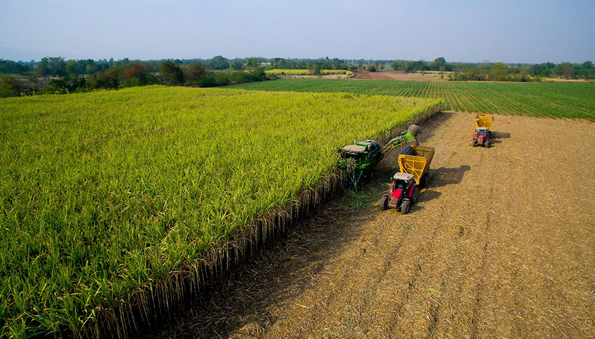
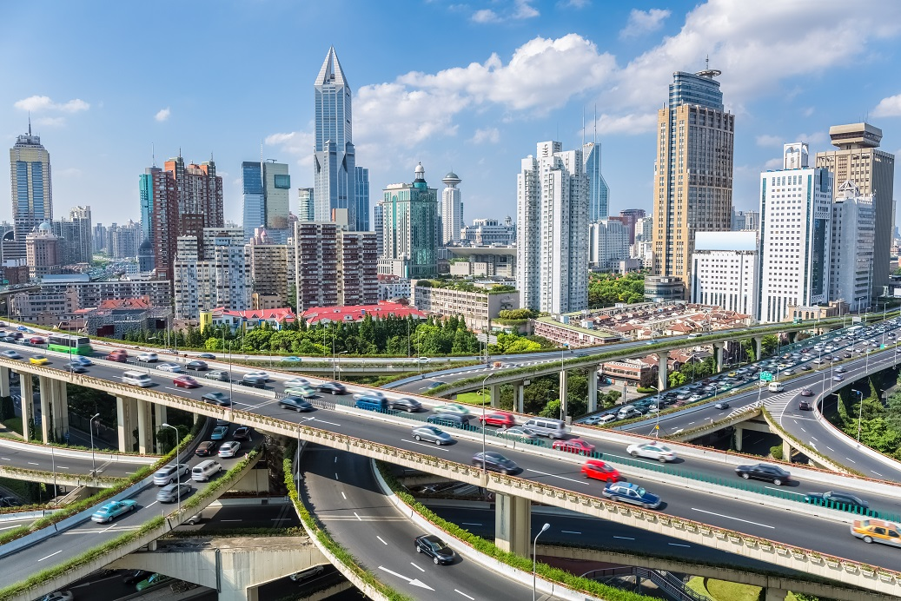

What is Deforestation?
Deforestation refers to the decrease in forest areas across the world that are lost for other uses such as
agricultural croplands, urbanization, or mining activities.
Deforestation has been negatively affecting natural ecosystems, biodiversity, and the climate.
The Causes of Deforestation
Multiple factors, either of human or natural origin, cause deforestation.
Natural factors include natural forest fires or parasite-caused diseases which can result in deforestation.
Nevertheless, human activities are among the main causes of global deforestation.
According to the Food and Agriculture Organization (FAO), the expansion of agriculture caused nearly 80% of global deforestation,
with the construction of infrastructures such as roads or dams, together with mining activities and urbanization, making up the remaining causes of deforestation.
1. Agriculture is the Number 1 Cause of Deforestation (~80%)

Why is deforestation happening?
According to the FAO, agriculture causes around 80% of deforestation.
Besides, how does agriculture cause so much deforestation?
According to the same report, 33% of agriculture-caused deforestation is a consequence of subsistence agriculture – such as local peasant agriculture in developing countries.
Commercial or industrial agriculture (field crops and livestock) cause around 40% of forest loss –
in the search for space to grow food, fibers or biofuel (such as soybeans, palm oil, beef, rice, maize, cotton and sugar cane).
It is also particularly interesting to note livestock is believed to be responsible for about 14% of global deforestation.
The main reasons why have to do with the large areas require both to raise livestock but also to grow its (soy-based) food.
2. Deforestation Caused By New Constructions (~15%)

The construction of human infrastructures has also been driving deforestation.
More specifically, 10% of deforestation can be attributed to new infrastructures that serve the current human lifestyle in
four main ways:
transportation, transformation and energy generation.
On one hand, roads, rails, ports or airports have been built to move all sorts of goods – from cereals and fruits to spices, minerals or fossil fuels – either directly to trade centers or to transformation sites.
So while at first there were only fruit trees, roads soon arrived to allow transporting fruit to other regions.
Inaddition, while some goods were and are collected manually, others such as
coal, oil, natural gas, biomass, but also meat, dairy or spirits, required the construction of large extraction, transportation and/or transformation infrastructures.
3. How Urbanization Is Causing Deforestation (~5%)
The populational shift that is leading people to move from rural areas to urban areas is also contributing to deforestation (5%, according to FAO).
This urban growth – in which 68% of the world’s population is expected to live in cities by 2050 – is leading to an exponential growth of housing and consumption sites.
Besides, as cities become larger so they can host more people, they challenge the natural boundaries surrounding them, often leading to deforestation.
This is one of the reasons why deforestation is happening.